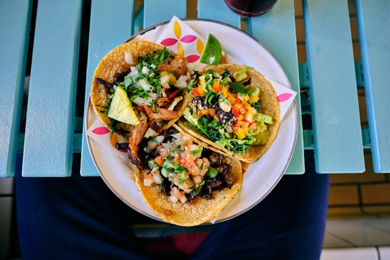

Ground Beef Tacos
I love this tacos recipe because it's quick, flavorful, and fun to customize. Everyone can add their favorite toppings, and it's a perfect weeknight meal that feels like a little fiesta at home!
Ingredients
- 1 pound ground beef
- 1 small onion, finely chopped
- 1 packet taco seasoning
- 1/2 cup water
- 8 small taco shells or soft tortillas
- Shredded lettuce
- Diced tomatoes
- Shredded cheese
- Sour cream
- Salsa
Instructions
- In a skillet over medium heat, cook the ground beef and onion until the meat is browned and onions are softened. Drain any excess fat.
- Stir in taco seasoning and water. Simmer for 5 minutes, stirring occasionally, until the sauce thickens slightly.
- Heat taco shells according to package instructions.
- Spoon the beef mixture into each shell and add your favorite toppings. Serve immediately.